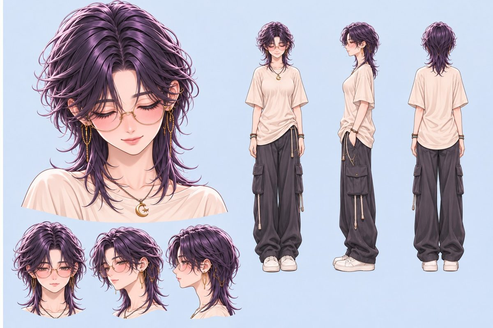
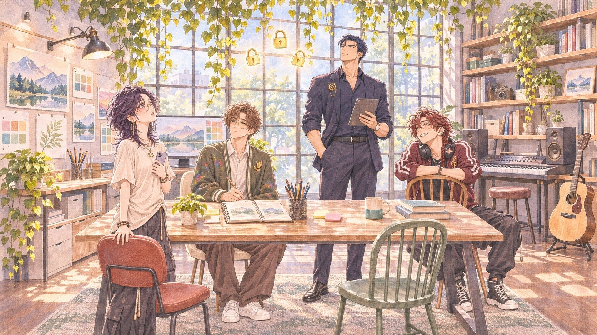
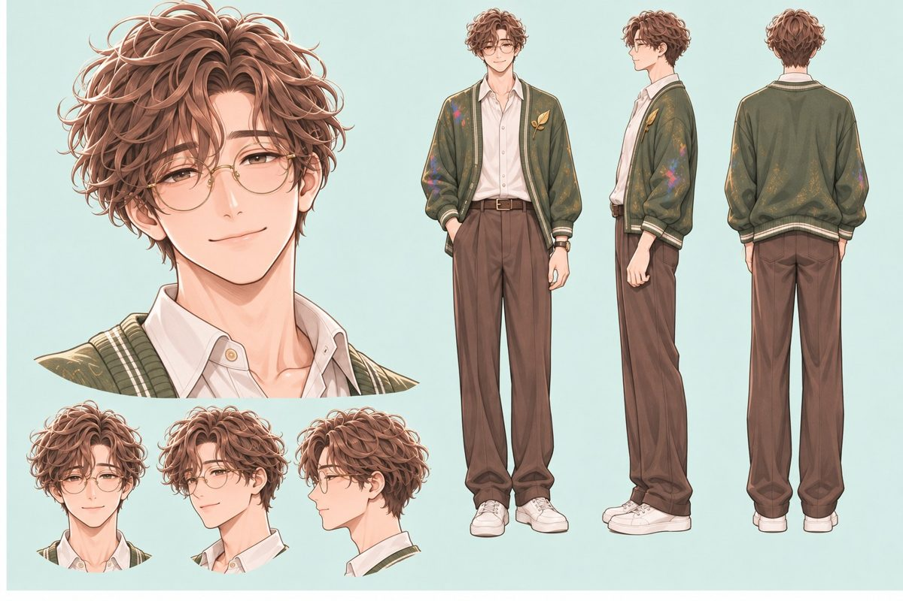
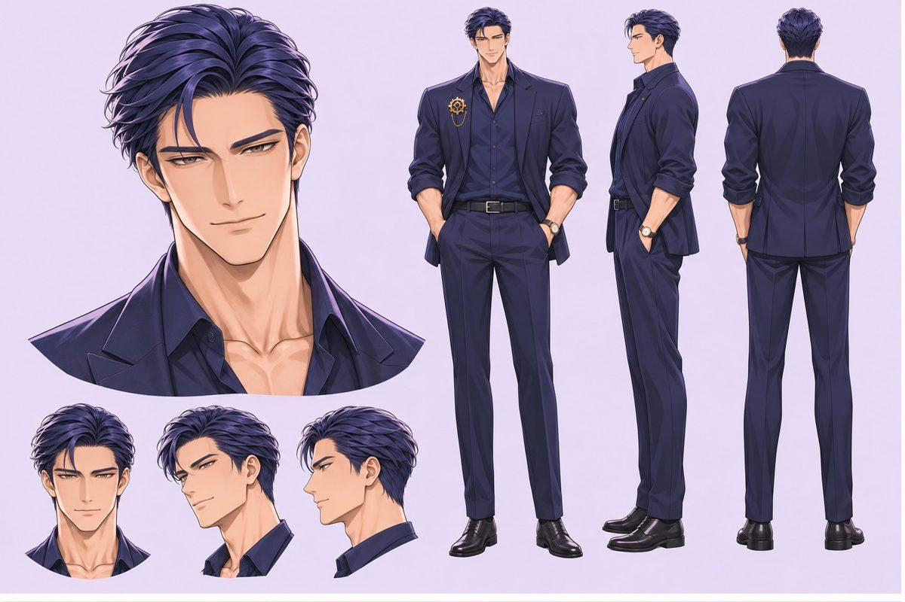
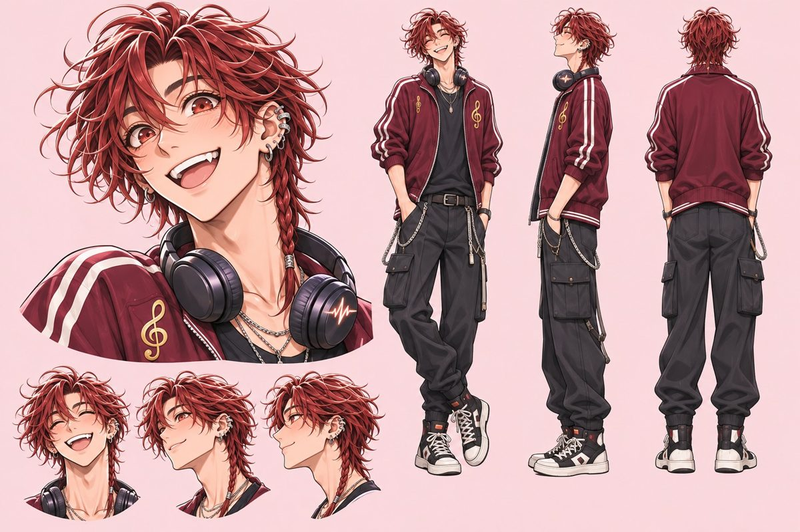

茶語
創作者
自稱程式白痴、懶但會給自己設死線、文組、學過長笛、愛音樂劇

怎麼選，才不會後悔？
Larch 創作者挑戰「自由與限制」那三個禮拜，大學生茶語在高雄的書桌前，做一部聖騎士與信仰的 RPG。她的三個 AI 夥伴升級之後有了人形介面：畫圖的 C 先生、寫程式的 M 先生、做音樂的 S 先生。她想說一個好故事。他們知道一件她不知道的事。

自稱程式白痴、懶但會給自己設死線、文組、學過長笛、愛音樂劇

很會畫、答應得快、說了就先畫；沒講清楚就漂，不記得上一次的約定，每次開新對話都是第一次見到她

可靠、交代就做完、會算點數；碰不到她的白板，卡片和線只能她自己拉

比故事跑得快、先抓感覺、不怕用聽不懂的語言；她的耳朵很挑（學過長笛），他是唯一會被她用專業退件的人；最想要歌被聽完
先去玩讓這一切開始的那部作品：《最後的聖戰》。